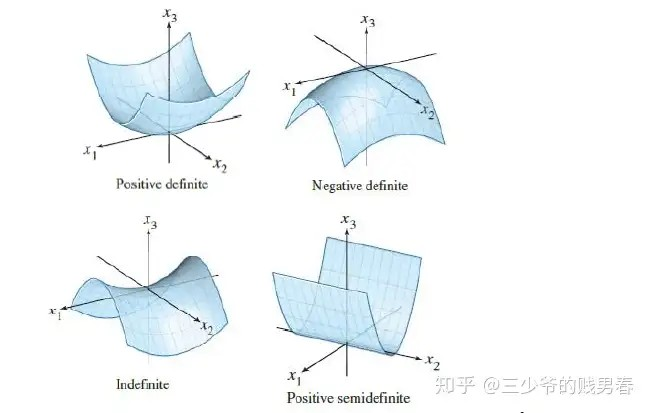

等学完回来写写写写写写写写写写写写写写写写写写
一. 对称矩阵及其正定性
在这里我们只讨论实对称矩阵。
我们很喜欢对称矩阵，因为它具有很好的性质。就拿实对称矩阵来举例，它具有下列两个性质：
- 其特征值均为实数
- 其具有正交的特征向量。这里的“有”，是指可以选出一套完全正交的特征向量（例如在重特征值条件下，可能存在一个平面内向量都可以作为特征向量）
- 特征值的符号与主元的符号相同，即正数的个数相同，负数的个数也相同
上一章我们学过，若方阵\(A\)具有n个线性无关的特征向量，那么其可以对角化为\(S\Lambda S^{-1}\)。
对于有n个线性无关特征向量的对称矩阵来说，因为性质2，所以它的特征向量矩阵可化为一个正交阵\(Q\)，正交阵满足\(Q^\mathrm{T} = Q^{=1}\)
所以对于具有n个线性无关特征向量的对称矩阵\(A\)来说，其可对角化为\(Q\Lambda Q^T\)。
把上面的式子进一步展开：
\(A = Q\Lambda Q^\mathrm{T} = \begin{bmatrix} q_1 & q_2 & \cdots & q_n \end{bmatrix} \begin{bmatrix} \lambda_1 & & & \\ & \lambda_2 & & \\ & & \cdots & \\ \end{bmatrix} \begin{bmatrix} q_1^\mathrm{T} \\ q_2^\mathrm{T} \\ \cdots \\ \end{bmatrix}\)
利用"线性代数1"讲的用拆分矩阵乘法为加法去理解这个式子，可以写成：
\(A = \lambda_1q_1q_1^\mathrm{T} + \lambda_2q_2q_2^\mathrm{T} + \cdots + \lambda_nq_nq_n^\mathrm{T}\)
上面这个式子发现了吗，其实每一项都是一个系数乘一个投影矩阵，因为\(Q\)是正交矩阵，所以\(q_i^\mathrm{T}q_i = 1\)。
所以\(A\)可以理解为投影矩阵的线性组合，且投影方向都是互相正交的。
下面来介绍正定矩阵。
正定矩阵是对称矩阵的一个子类，且所有特征值>0
而且它的“子行列式”均>0，子行列式指的是n阶矩阵左上角的所有\(k \times k, 1 \le k \le n\)子行列式数值均为正。这很好理解，由对称矩阵的性质3，我们知道，其所有主元都>0。而行列式就等于主元之积，所以子行列式们自然都大于0。这就是用行列式判定矩阵正定的判据。
二. 复数矩阵, 快速傅里叶变换
对不起我的高数很垃圾，这节我也听不懂。等我学完mit 18.03再来听这一节课
三. 正定矩阵
正定矩阵是很好的矩阵，它是对称的而且所有特征值都大于零。那么如何判定一个方阵是正定矩阵呢？这里我给出几种方法
- 所有特征值\(\lambda_i > 0\)
- 所有主元大于零
- 所有子行列式们大于零
- \(x^\mathrm{T}Ax > 0, x \ne \textbf{0}\)
第一个是定义，第二个是因为对称矩阵有一个性质就是特征值正负号与主元相同，所以可根据(1)得到第二条等价条件。第三个是用行列式判断正定性(前面讲过)。第四个是新加的，我们很喜欢用第四个判据。让我们来看看为什么这个判据可以推出矩阵是正定的。
对于\(x^\mathrm{T}Ax\)，我们将其展开： \[ x^\mathrm{T}Ax = \begin{bmatrix}x_1, x_2, \cdots, x_n\end{bmatrix}\begin{bmatrix} a_{11}x_1+a_{12}x_2+\cdots+a_{1n}x_n \\ a_{21}x_1 + a_{22}x_2 + \cdots + a_{2n}x_n \\ a_{31}x_1 + a_{32}x_2 + \cdots + a_{3n}x_n \\ \cdots \\ a_{n1}x_1 + a_{n2}x_2 + \cdots + a_{nn}x_n\end{bmatrix} = \\ x_1(a_{11}x_1+a_{12}x_2+\cdots+a_{1n}x_n)+ x_2(a_{21}x_1 + a_{22}x_2 + \cdots + a_{2n}x_n) + \cdots + x_n(a_{n1}x_1 + a_{n2}x_2 + \cdots + a_{nn}x_n) \] 可以发现，每一项都是二次的。其实如果用图像去研究这个函数：\(f(x) = x^\mathrm{T}Ax\)，（这个函数也叫二次型）
矩阵为正定时二次型图像见左上角，为半正定时图像见右下角，为非正定/半正定时图像见左下角，负定时图像见右上角
这些图像研究的是二维方阵的二次型，xy轴是\(x\)的俩分量\(x_1, x_2\)，z轴是\(f(x)=x^\mathrm{T}Ax\)

下面继续讨论下正定矩阵还有哪些性质，假设\(A, B\)为正定矩阵，\(C\)为矩阵。
那么\(A\)是否可逆呢？答案是肯定的，因为我们知道\(A\)的子行列式们都大于0，所以\(det(A) > 0\)，所以\(A\)是非奇异的，即满秩可逆的。
那么\(A^{-1}\)是不是正定矩阵呢？答案是肯定的。因为我们知道\(A^{-1}\)的特征值们就是\(A\)的特征值取倒数，而\(A\)的特征值都大于0，所以\(A^{-1}\)的特征值也都大于0，所以\(A^{-1}\)也为正定矩阵。
那么\(A + B\)是不是正定矩阵呢？答案是肯定的。我们来看看\(x^\mathrm{T}(A+B)x = x^\mathrm{T}Ax + x^\mathrm{T}Bx > 0\)，所以\(A + B\)也是正定矩阵。
那么\(C^\mathrm{T}C\)是不是正定矩阵呢？答案是不一定。我们来看看\(x^\mathrm{T}(C^\mathrm{T}C)x = (Cx)^\mathrm{T}(CX) = \|Cx\|^2 \ge 0\)。
所以\(C^\mathrm{T}C\)至少是半正定的，那什么时候是正定的呢？只要没有非零向量使得\(Cx = \textbf{0}\)，那么就可以保证：\(x^\mathrm{T}(C^\mathrm{T}C)x > 0\)。
即要保证\(N(C) = \{\textbf{0}\}\)，即要保证\(r(C) = n\)，即可保证\(C^\mathrm{T}C\)是正定矩阵。
还记得\(C^\mathrm{T}C\)在哪用到吗？即最小二乘求最优近似解那里，最后方程为：\(C\hat{x}=Pb = C(C^\mathrm{T}C)^{-1}C^\mathrm{T}b\)
只要保证\(C\)各列线性无关，则\(C^\mathrm{T}C\)是正定矩阵，所以\(C^\mathrm{T}C\)可逆，则上述方程成立，同左乘\(C^\mathrm{T}\)，然后再左乘\((C^\mathrm{T}C)^{-1}\)，即可求出\(\hat{x}\)。
四. 相似矩阵
\(A, B\)均为\(n \times n\)的方阵，那么\(A\)与\(B\)相似，用数学语言表达为：存在可逆矩阵\(M\)，使得\(B = M^{-1}AM\)
它具有一个性质：相似的矩阵拥有相同的特征值。
证明：
\(Ax = \lambda x\)
\(A(MM^{-1})x = \lambda x\)
\(M^{-1}AMM^{-1}x = \lambda M^{-1}x\)
\(BM^{-1}x = \lambda M^{-1}x\)
\(B(M^{-1}x) = \lambda (M^{-1}x)\)
证毕。且可看出特征值虽然不变，但是特征向量由\(x\)变为了\(M^{-1}x\)。
举个例子，例如可对角化的矩阵\(A\)，其可分解为：\(A = S^{-1}\Lambda S\)。其中\(S\)是可逆的，因为各特征向量线性无关。所以\(A\)与\(\Lambda\)就相似。而且我们会发现，\(A\)与\(\Lambda\)的特征值一样。